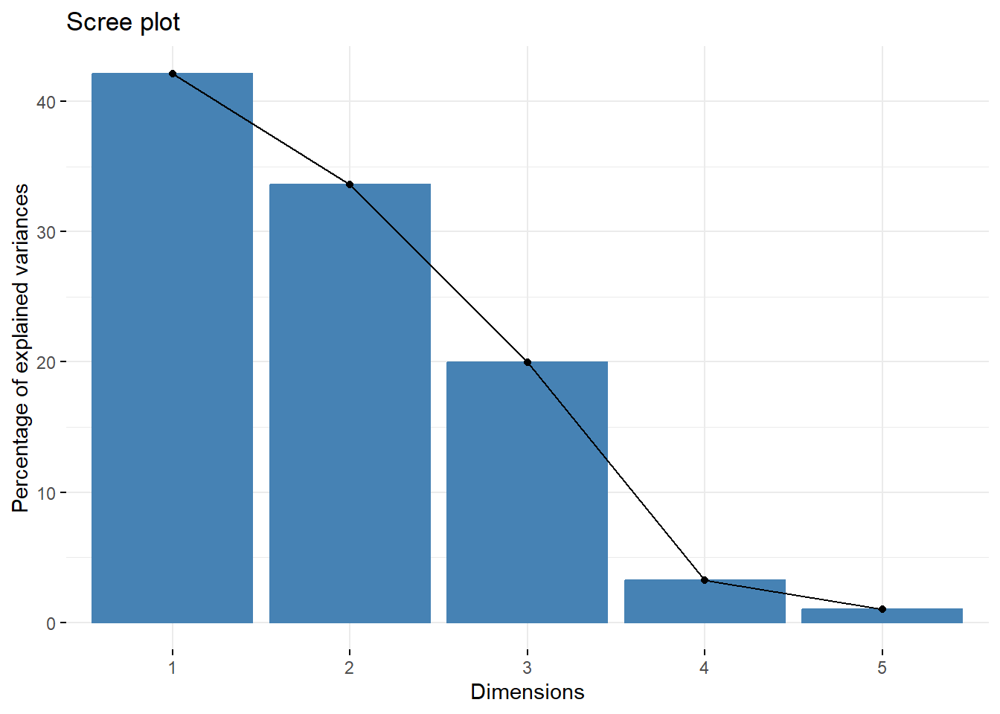
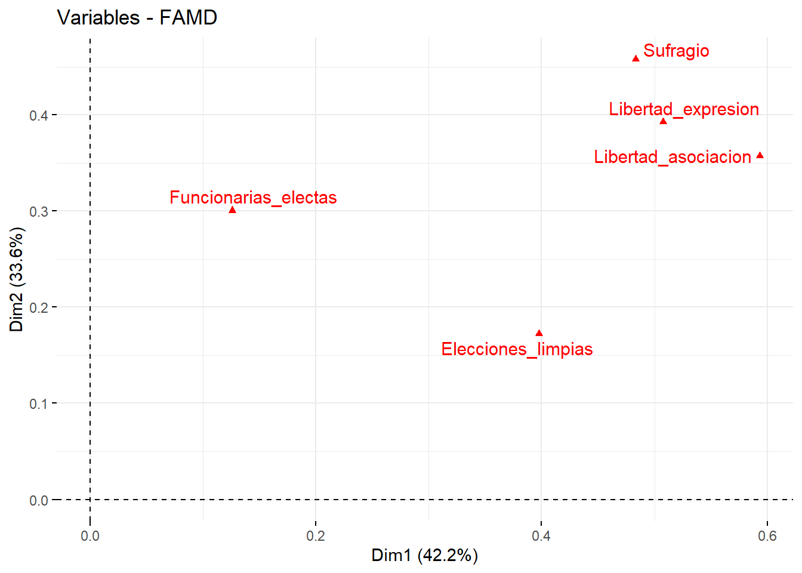
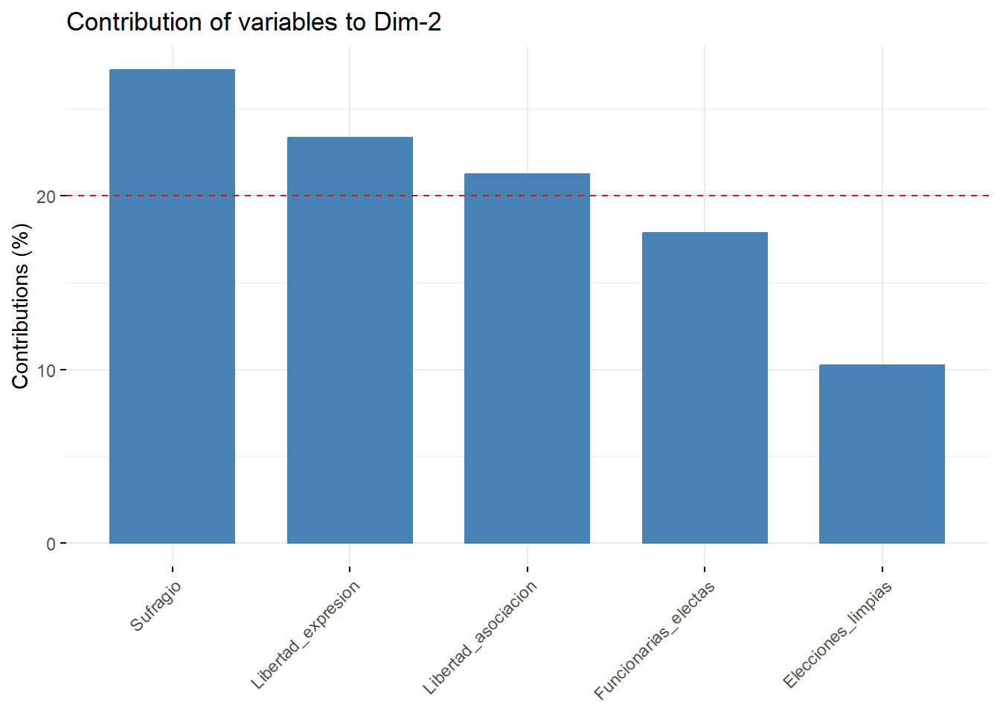

Capítulo 3 Análisis Multivariado
En la construcción de índices compuestos, técnicas de reducción de dimensionalidad como el Análisis de Componentes Principales (ACP) para variables cuantitativas y el Análisis de Correspondencias Múltiples (ACM) para variables cualitativas se emplean para sintetizar la información de múltiples variables. Estas técnicas extraen dimensiones principales que capturan la mayor variabilidad posible de los datos. Para conjuntos de datos que contienen tanto variables cuantitativas como cualitativas, se recomienda el Análisis Factorial para Datos Mixtos (FAMD), que combina los principios del ACP y ACM en un solo marco de análisis. Esta técnica permite analizar simultáneamente ambos tipos de variables y descubrir estructuras subyacentes en el conjunto de datos.
3.1 Análisis Factorial para Datos Mixtos
Cuando se trabaja con conjuntos de datos mixtos que incluyen tanto variables continuas como categóricas, es recomendable utilizar el Análisis Factorial para Datos Mixtos (FAMD). En R, este análisis se puede realizar mediante el paquete FactoMineR (Pages 2004). Para mayor información sobre famd véase también a (Lê 2008).
# FactoMineR
library(FactoMineR)
library(factoextra)
# Convertir las columnas binarias en factores (las variables cualitativas deben ser factores en FAMD)
datos_IST_imputados_3$Funcionarias_electas <- factor(
datos_IST_imputados_3$Funcionarias_electas,
levels = c(0, 1),
labels = c("No_Funcionarias", "Sí_Funcionarias")
)
datos_IST_imputados_3$Sufragio <- factor(
datos_IST_imputados_3$Sufragio,
levels = c(0, 1),
labels = c("No_Sufragio", "Sí_Sufragio")
)
# FAMD
famd <- FAMD(datos_IST_imputados_3 [,-1], graph = FALSE)Usualmente se elige un conjunto de dimensiones que explique entre el 70 y 80% de la varianza. A modo de ejemplo, si se escogen las dos primeras dimensiones, estas suman el 75.776% de la varianza.
## eigenvalue variance.percent cumulative.variance.percent
## Dim.1 2.10809159 42.1618318 42.16183
## Dim.2 1.68071357 33.6142713 75.77610
## Dim.3 0.99947430 19.9894859 95.76559
## Dim.4 0.16204539 3.2409078 99.00650
## Dim.5 0.04967516 0.9935032 100.00000
El eje horizontal (Dim1) representa la primera dimensión y explica el 42.2% de la variabilidad en los datos, mientras que el eje vertical (Dim2) representa la segunda dimensión y explica el 33.6%. Los puntos rojos indican la posición de cada variable en estas dos dimensiones. Libertad_asociacion y Elecciones_limpias tienen una fuerte asociación con la primera dimensión. Funcionarias_electas está más relacionada con la segunda dimensión.
La posición de las variables en el gráfico ayuda a comprender su contribución a la estructura de los datos.

Este gráfico representa la dispersión de las observaciones, cada punto corresponde a un planeta, ubicado de acuerdo con los valores que toma en las dos dimensiones consideradas más explicativas de la variabilidad en los datos. Por ejemplo, los planetas marcados con 1 y 6 están cerca en el espacio de la dimensión, lo que indica que tienen perfiles similares en términos de las variables estudiadas. Por otro lado, los planetas que están más alejados en el gráfico, como los puntos 10 y 7, tendrían características distintas.
El gráfico muestra cómo cada variable influye en la primera dimensión del FAMD. Libertad_asociacion y Libertad_expresion son las más influyentes, mientras que Funcionarias_electas contribuye menos.
Este gráfico muestra las contribuciones de las variables a la segunda dimensión, de manera similar al gráfico anterior que se enfocaba en la primera dimensión. Sufragio domina esta dimensión.
